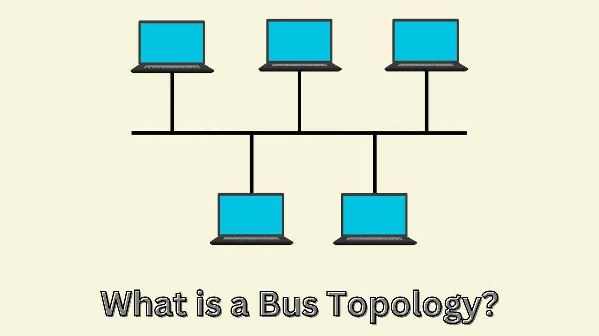

Tipuri de Topologii
Topologia unei rețele reprezintă modul în care dispozitivele sunt interconectate fizic sau logic. Fiecare topologie are avantaje și dezavantaje specifice, iar alegerea celei potrivite depinde de mărimea rețelei, costul implementării și necesitățile specifice ale organizației. Înțelegerea acestor topologii este crucială pentru proiectarea și menținerea unei rețele eficiente.
Topologia Stea
Toate calculatoarele sunt conectate la un dispozitiv central.
- Ușor de gestionat
- Folosită în rețele locale
Topologia Inel

Calculatoarele sunt conectate unul la altul în cerc.
- Transmisie simplă
- Pentru rețele mici
Topologia Bus

Toate calculatoarele sunt conectate la un cablu principal.
- Simplă și ieftină
- Pentru rețele mici